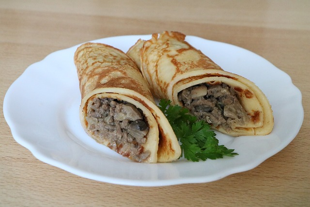

Odin's Pancakes
A hearty, meat-filled pancake, with boiled cabbage syrup

A juicy, meat filled pancake. Perfect for those mornings that will end with victory, or dining in the halls of Valhalla.
There are only a few select ingredients required for this monster breafast.
- Pre-mix pancake batter
- Water
- MEAT
Assembling your breakfast is a fast, and easy process that will have you raiding and fighting in no time at all!
- Swing your axe so fast it ignites
- Use the boiling hot axe blade to cook the pancakes
- Kill the closest non-sentient creature
- Throw it in a fire and scatter remains over pancakes
- Scream to Odin in Victory!